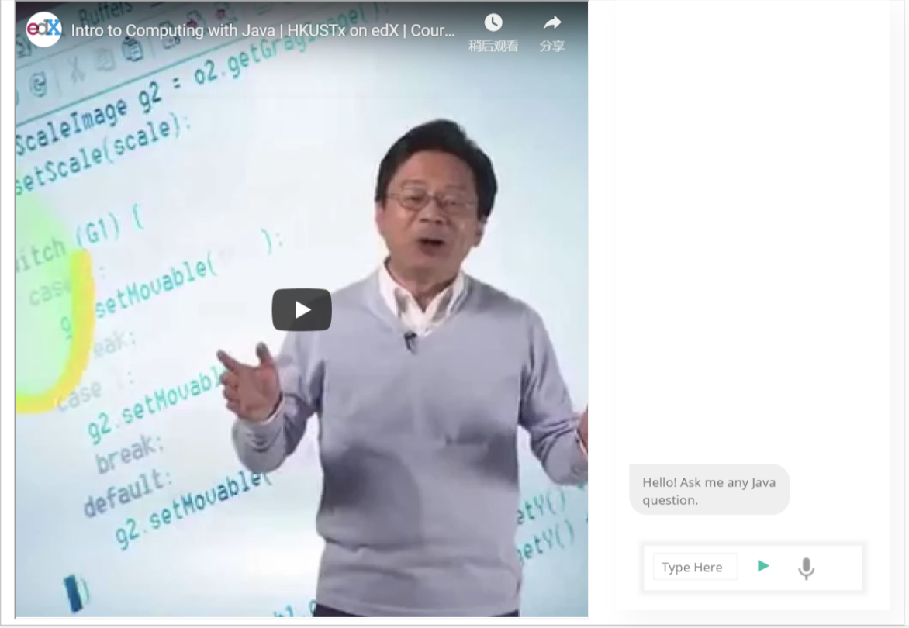

overview
AI chatbot solution for e-learning environments is my final year project advised by professor Dit-Yan Yeung. In the project, we introduced chatbots into e-learning environments to add up interactivity in e-learning platforms. To do this, we built an Chatbot system that handles user's questions, which was integrated it into Open edX, the online MOOC platform. The system enables both speech and text input, and passes the query through the question-and-answer pipeline and eventually returns the best answer if enough confidence is calculated.
Our Final Year Project was listed as one of the Best FYPs in year 2018-2019. It also entered the IEEE (Hong Kong) Computational Intelligence Chapter Final Year Project Competition 2018-2019 as the second runner-up.
my role
- UI design
- front-end development
- system integration
- slides design and presentation
demo video
design
data flow design
user interface design
methodology
We implemented similar question recommendations and speech recognition through different state-of-the-art Natural Language Processing models and RASA chatbot tools.
key takeaways
My main role in this project was to design and implement the front-end, which was integrated into the edX e-learning platform. I had a lot of fun playing with the user interface and learning about the best layout, thinking from the end user's perspectives.
This is also one of the longest project I have been in. During the one year I was in the project, me and my teammate carefully planned out the process, and accomplished the tasked one at a time. It was a rewarding and meaningful experience.